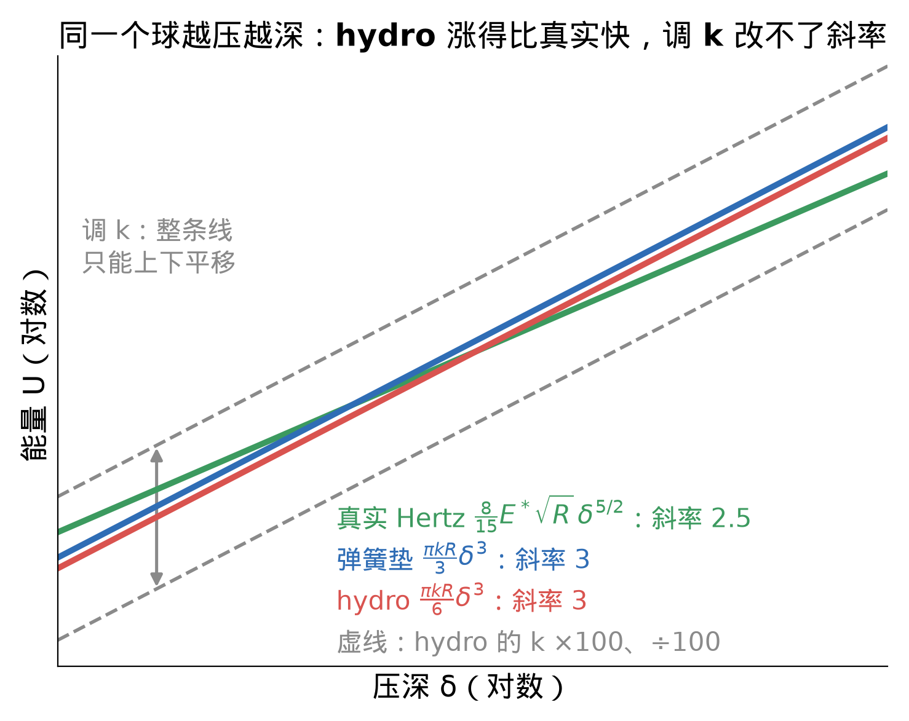
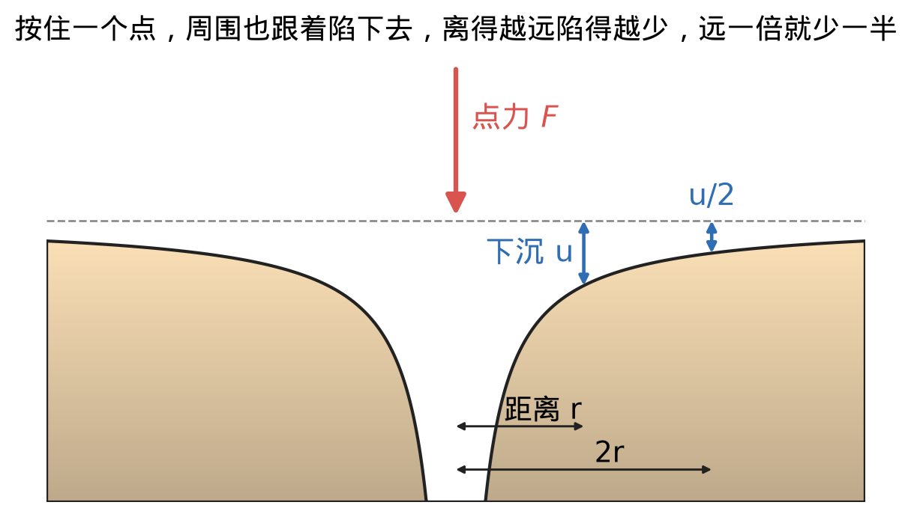
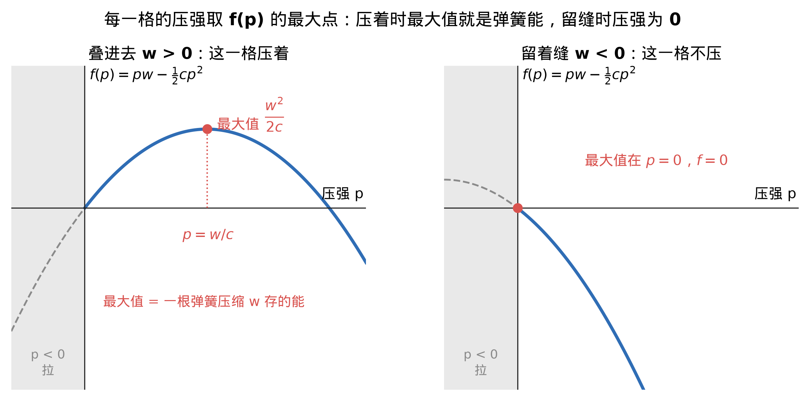
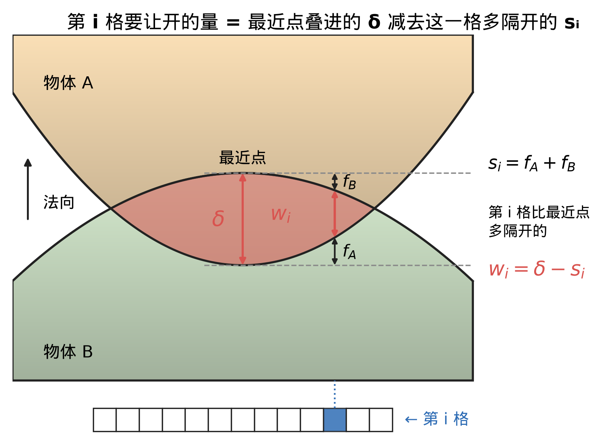
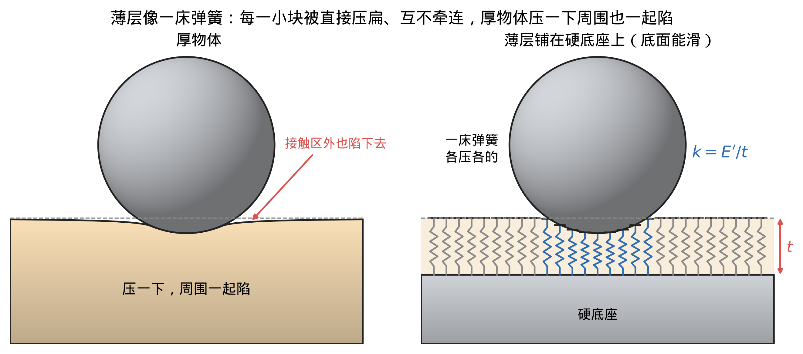
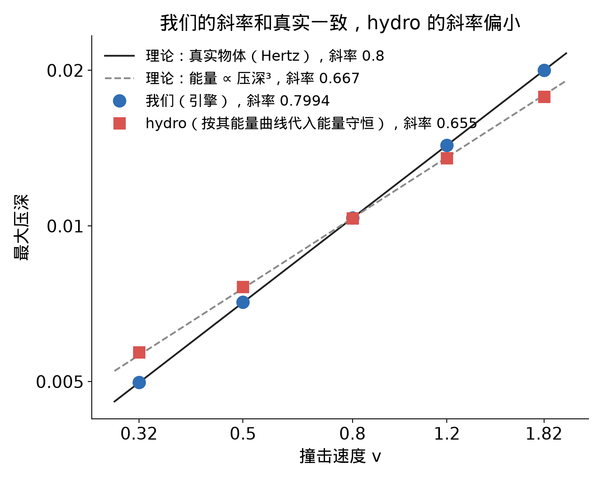

Week 5（TODO 2026-10-26）
用更普通的形状做数据集；用普通形状验证架构、对比 baseline；文献：有多少公式是已知的；理想情况下的 test case。
- 这周的四条 TODO：
- 用更普通的形状（不对称的，甚至兔子这样的）做数据集；
- 用普通形状验证架构是对的，并和 baseline 比；
- 查文献，看模型里的公式有多少是已知的；
- 整理理想情况下的 test case。
（页首摘要最后写）
用更普通的形状做数据集
这一节要回答什么
- 训练数据能不能代表普通的接触。形状不对称，接触位置、朝向、压深都随机，物体压平块和物体压物体两类都有。
- 用训练前的第 1 关来判。判据在看到数据之前定下，不随结果改：
- 训练形状至少 8 个，其中有 Thingi10K 里的形状；
- 物体压平块、物体压物体两类都有；
- 接触点、两物体之间的转角、压深都随机抽；
- 只因数值失败剔除样本（仿真不收敛、停不下来、单元翻转、求解失败），不因几何条件剔除；
- 留出 2 个形状，不参加任何训练和调参，只在第 5 关最后检验一次。
怎么做
- 一个样本 = 把物体 A 压到另一个东西上、压到一个深度、等它静止后读出两边的弹性能。A 离接触点较远的一片区域被整体往下推，被压的一方远端固定，两边是同样软的材料。
- 被压的一方有两种：平块（约三分之一），或另一个物体 B。A、B 从同一个形状池里取，可以是同一个形状。
形状
- 本地 3 个经典扫描形状：兔子、龙、鸭子。
- Thingi10K 里按固定规则抽 8 个。Thingi10K 是一万个 3D 打印模型的公开数据集，形状五花八门。条件事先写好：表面封闭、是流形、只有一整块、没有自交、没有把手和洞，表面光滑；许可证允许研究、发表和改编。符合条件的按固定随机种子打乱，依次收满 8 个。
- 抽到的 8 个：字母 I、字母 J、靴子、巫师帽、耳朵销钉、尾巴，以及最后收下的花、融合球。后两个整体留出。
- 留出形状另加一个图形学经典模型 Blub（一条卡通鱼），因为花和融合球的样本丢得多、留出行不够。
- 所有形状统一缩放到最长边为 10，和兔子同一尺度。
接触点和压深
- 接触点在表面上按面积均匀随机取。在 A 表面随机取一点、看它朝外的方向，再沿这个方向找 A 最突出的点当接触点，把 A 摆在一个水平面上方；B 同样取最突出的点摆在下方，再绕竖直方向随机转一个角度。两个物体一开始被这个平面隔开，所以起始状态必然没有穿透。
- 压深按接触处的弯曲程度定：
\[\color{#c0392b}{\frac{\delta}{R}\sim\mathcal U\big[\,0.01,\ 0.1\,\big],\qquad R=\frac{1}{\sqrt{\kappa_1\kappa_2}}}\]
- 每个符号：δ 是压深；R 是接触处的等效半径（Hertz 等效半径），\(\kappa_1\)、\(\kappa_2\) 是两侧表面相对曲率相加后的两个主曲率；\(\mathcal U\) 表示均匀抽样。
- 为什么除以 R：同样压 0.01，压在凸起处和压在平处完全是两回事；除以 R 以后才是可比的「压得多深」。上限 0.1 让变形留在小变形附近；下限 0.01 再往下，接触斑太小，网格分辨不出来。
- 凹、鞍或比现有数据里最平的接触还平时，\(R\) 换成一个事先定的长度尺度（现有兔子数据里等效半径的中位数，按物体大小等比例换算），照样压、打标记。
- 随机数用拉丁超立方抽样：每个随机量的范围均匀切成 n 段，n 个样本在每段里恰好各落一个，样本少时也能把范围铺满。
网格和骨架的前提
- 骨架要看得清这块接触。抽到的接触点在最浅压深下，接触斑至少盖住骨架的 4 个格子；不满足就换一个方向重抽，最多 20 次。
- 远处还有第二块接触的，记为多接触样本。标签照算，单独计数，不进单接触的统计。
- 接触区的网格不能比已验证过的粗：接触斑半径 a 除以接触区最长的网格边，A、B 两侧都要 ≥ 4.32。4.32 是兔子数据里能下结论的 28 行中这个比值的最小值，那些行的标签误差已经量过。不够就把接触区的网格边逐层一分为二，最多 2 层。
标签
- 一套冻结的流程批量生成。IPC 加有限元，每个样本压到指定深度、等静止后读能量；IPC 两个表面最后会隔着一个很小的安全距离停下，所以每个样本用三档安全距离各跑一次，外推到 0。
- 线性部分交给更准的单元，IPC 只提供非线性的那部分：
\[\color{#c0392b}{U_{\text{标签}}=\frac{U_{\text{IPC}}}{U_{\text{P1}}}\times U_{\text{P2,细}}}\]
- 每个符号：\(U_{\text{IPC}}\) 是 IPC 读出的弹性能；\(U_{\text{P1}}\) 是同一张网格上用线性四面体（P1，和 IPC 同一种单元）算的线弹性能；\(U_{\text{P2,细}}\) 是更细的网格上用二次四面体（P2）算的线弹性能。
- 直观理解：IPC 只有线性四面体，一个单元里应变是常数，弯不起来，整体偏硬。前一个比值里两边偏硬的原因相同，大致抵消，剩下的是「大变形让能量多了或少了几成」；再乘上准确的线弹性能，就是标签。
- 每一行标签带一个误差带 ±3.57%，在看普通形状数据之前定下。模型和标签的差在误差带以内，写「在标签精度以内」，不再细分。
- 行分两档。按线弹性参照上接触半径盖住几个压力格 \(a/h\) 分：\(a/h\ge2\) 是结论档，用来下结论；\(1.5\le a/h<2\) 是统计档，只进统计。
为什么不能直接拿 IPC 的结果当真值
- 单元太简单：libuipc 只有线性四面体，薄的、会弯的部位整体偏硬；把整只物体都加密到足够细又算不起。所以线性部分用 P2 的线弹性解。
- 两个表面之间留着安全距离：读到的能量随安全距离变，所以外推到 0。
- 它是我们自己算的数值解：每行标签带着误差带，当作一把精度已知的尺子，小于误差带的差别不去分辨。和 hydro 在原理上比时，裁判是独立于双方的弹性力学精确解（第 4 节）。
- ±3.57% 由三部分相加：标签规范对这套网格档给的 ±1.5%；比值里没能抵消掉的压力格误差 0.457 个百分点；线弹性参照换一档网格时的变化 1.611 个百分点。
设置：IPC 只跑中档网格（粗档只用于收敛检查，已砍）；安全距离 2.5e-4、1.25e-4、6.25e-5 三档；连续 3 帧位移和能量不再变才算静止；材料模量按 snk1 改写；随机种子 20261108；周日 15:00 后不再起新作业。
结果
数据从抽样到进表
| 训练 | 留出 | 合计 | |
|---|---|---|---|
| 抽到的样本 | 48 | 18 | 66 |
| 进表的样本 | 22 | 8 | 30 |
| 其中多接触 | 2 | 0 | 2 |
| 结论档的行（\(a/h\ge2\)，细参照已算） | 4 | 1 | 5 |
- 每个样本只压一个深度，所以一个样本就是一行。
- 能进结论档的很少：训练样本里只有 4 行，全是物体压物体，压平块 0 行。
- 少的原因有两层：
- 线弹性参照的压力格是固定的，接触半径只有 0.02–0.05，大多数样本的接触斑在这张格上只盖住 1–1.5 个格子半径，落不进结论档；
- 进了结论档的样本还要再算一次细参照，细网格接触区不够细的样本会失败，约 5/8 能算出来。
压深分布：抽样是均匀的，后面的步骤也没有把哪一段压深掉得特别多。
| \(\delta/R\) 区间 | 抽到的训练样本 | 进表的训练行 | 结论档的行 |
|---|---|---|---|
| 0.01–0.04 | 14 | 6 | 1 |
| 0.04–0.07 | 17 | 7 | 1 |
| 0.07–0.10 | 15 | 7 | 2 |
- 抽到的另有 2 个在放置阶段就没有建成，没有压深。
- 结论档只有 4 行，判不了分布是否均匀。
丢掉的 36 个样本，按真实原因分三类
| 类 | 个数 | 怎么丢的 |
|---|---|---|
| 数值 | 15 | 接触区加密以后四面体剖分失败 10 个；线弹性 P1 求解失败 4 个；输入表面自相交 1 个 |
| 几何 | 12 | 骨架计算域装不下 4 个；驱动区放不下 3 个；骨架判为多处接触 3 个；重抽 20 次仍看不清 1 个；凹接触被骨架拒收 1 个 |
| 成本 | 9 | 加密 2 层后接触区仍比下限粗、要第 3 层，成本没批 8 个；骨架格数超上限 1 个 |
- 数值类集中在 Thingi10K 形状上：加密以后剖分失败的 10 个全是 Thingi10K 形状。字母 I、字母 J、靴子三个形状的样本全部丢掉（剖分失败、驱动区放不下、骨架拒收），所以训练形状只剩 6 个。
- 几何类逐个列在下面「局限」里。
第 1 关逐条判
| 判据 | 要求 | 实际 | 判定 |
|---|---|---|---|
| 训练形状数 | ≥ 8，含 Thingi10K | 6：兔子、龙、鸭子、尾巴、巫师帽、耳朵销钉 | 差 2 个 |
| 两类接触 | 压平块、物体压物体都有 | 都有 | 满足 |
| 随机抽样 | 接触点、转角、压深都随机 | 每个样本都有抽样记录 | 满足 |
| 只因数值失败剔除 | 几何原因丢 0 个 | 判关代码统计 7 个（骨架判拒 4、驱动区 3）；按真实原因 12 个 | 差 7 / 12 |
| 留出 2 个形状 | 花、融合球 | 留出结论档 1 行 | 满足（行数见第 5 关） |
第 1 关未过：训练形状 6 个（要求 8 个），并有 12 个样本因几何原因被丢；后面第 2–5 关的结论都是「关 1 未过下的条件性结果」。
接下来的 v2 怎么补
- 网格迁就样本。v1 的行丢在「接触斑在参照格上盖不住 2 个格子」。v2 的参照格距跟着每个样本自己的接触半径 \(\sqrt{R\delta}\) 走，让接触半径从构造上盖住 2 个格子以上；接触区的网格再加密到这张格能用的细度，加密后仍不够的按成本丢弃、逐个列出。
- 每个样本压 3 个深度。三个 \(\delta/R\) 各自在 \([0.01,\,0.1]\) 里独立均匀地抽，不取固定倍数，所以行数约变 3 倍、\(\delta/R\) 的分布不变。同一次仿真里由浅到深逐级压、逐级等静止、逐级读数，三行共用一张网格。
- 统计时按样本算独立性：同一个样本的 3 行不当 3 个独立样本。
- 判据一条不动。标签沿用 v1 的做法，误差带沿用 ±3.57%，这套新设置上还没实测；夜里挑 2 个 v2 样本把接触区再加密一层重做标签，给出实测的变化量。
设置：v2 只用现有 6 个训练形状和 3 个留出形状；hydro 只算每个样本最深的那一行。
结论和局限
- 结论：v1 数据覆盖了 6 个训练形状、两类接触、随机压深，但没过第 1 关：形状少 2 个，几何原因丢了 12 个样本。
- v2 也补不上形状数。v2 只用现有 6 个训练形状加留出形状，所以第 1 关「形状数」这一条在 v2 上仍然不过；要补上，得重新选形状（典型模型优先、Thingi10K 换成细分后再判光滑），这放到下周。
- 几何原因丢掉的 12 个样本：
| 原因 | 样本（A / B） | \(\delta/R\) |
|---|---|---|
| 骨架计算域装不下（大压深压平块，重叠区超出计算域） | 鸭子 / 平块 | 0.087 |
| 兔子 / 平块 | 0.097 | |
| 兔子 / 平块 | 0.064 | |
| 巫师帽 / 平块 | 0.081 | |
| 驱动区放不下 | 字母 I / 巫师帽 | 0.040 |
| 字母 J / 靴子 | 0.045 | |
| 字母 I / 靴子 | 0.015 | |
| 骨架判为多处接触 | 耳朵销钉 / 字母 J | 0.011 |
| 融合球 / 融合球（留出） | 0.095 | |
| 融合球 / 花（留出） | 0.071 | |
| 重抽 20 次仍看不清 | 尾巴 / 字母 J | 未建成 |
| 凹接触被骨架拒收（两主曲率一正一负） | 字母 J / 平块 | 0.087 |
- 凹接触这周进不来，有两层原因：放置只取凸包上最突出的点，凹面里的接触抽不出来；就算抽到，骨架要求接触处两个相对主曲率都为正，也会拒收。
- 因成本丢掉的 8 个可能带偏向：它们是加密 2 层后接触区仍不够细的样本，多是接触斑小的情形。另外有两个样本加密以后比值没有变，加密是否真的作用到了接触区还没查。
- 薄、鞍、凸三类要等 15:00 提取后才能分；放置只取凸包上的点，预计绝大多数是凸。
组会可能被问的问题
- 为什么不把几何原因丢的样本算成「骨架适用范围外」，让第 1 关过？那等于看到结果以后改判据。照实报未过，原因和差多少都摆出来，后面的结果照样给，只是带着条件。
- 为什么每个样本只压一个深度？v1 沿用了「一个样本一个随机压深」的抽法，保证压深分布均匀；代价是行数少。v2 每个样本独立抽 3 个深度，分布不变、行数约 3 倍。
- 结论档为什么要 \(a/h\ge2\)？线弹性参照本身有格距误差；兔子上量过，接触半径盖住 2 个格子以上时误差约 ±1.3%，1.5–2 个格子时约 ±3.3%，再少就分不清模型误差和格距误差。
- 标签误差带 ±3.57% 是哪来的？冻结标签规范的 ±1.5%，加上两项在 4 个兔子压兔子构型上实测、比值里抵消不掉的网格误差，在看普通形状数据之前定下。
- 字母和靴子为什么一个样本都没剩？这些 Thingi10K 网格的三角形大小极不均匀，接触区加密以后四面体剖分失败；调剖分的质量参数也没救回来。
用普通形状验证架构、对比 baseline
这一节要回答什么
- 架构分两层：一层是能用公式算准的骨架（线弹性，在接触面上铺小方格算），另一层是一个逐格的小网络，只修骨架算不了的大变形那一小块。
- 验证按顺序回答四个问题，就是训练前的第 2–5 关：
- 第 2 关：骨架的线性部分算对了没有；
- 第 3 关：骨架和标签之间剩下的差，是不是真的需要网络来学；
- 第 4 关：网络的输入和这个差有没有关系；
- 第 5 关：网络在没见过的形状上是不是确实比骨架好。
- 再和 baseline 比：hydro 和几种常用的接触模型。
架构是什么
- 设定：两个物体按粗模型摆好以后，表面会互相叠进去一点。在最近点附近铺一片小方格，第 i 格两个表面叠进去 \(w_i\)，这一格的压强是 \(p_i\)。
\[\color{#c0392b}{\begin{aligned}&U=\max_{p\ge0}\;h^2\Big[p^\top w-\tfrac12p^\top Cp\Big]\\&C=C_{\text{局部}}+\Phi A\Phi^\top,\qquad \Phi=[\,1,\ x,\ z\,]\\&w_i=\delta-s_i\end{aligned}}\]
- 第一行，能量：U 是骨架给出的弹性能，h 是格子边长。每一格要么压着（有压强、正好让开），要么没压着（没压强、还留着缝），压强只能往外推；满足这些条件的压强正好让方括号取到最大，这个最大值就是弹性能，它对压深求导就是力。
- 第二行，柔度：\(C_{ij}\) 表示第 j 格受单位压力时第 i 格陷多少。\(C_{\text{局部}}\) 把物体当成无限大来算，一点受压周围按 \(1/r\) 跟着陷；\(\Phi A\Phi^\top\) 是有限大物体「整体让开」的部分：整片往下沉、沿 x 歪、沿 z 歪，A 是 3×3 的矩阵，每个形状提前用有限元算好成表，按接触位置查。
- 第三行，叠进量：δ 是最近点处的压深，\(s_i\) 是第 i 格比最近点多隔开的距离。
- 网络只改一处：给每一格输出一个正数 \(d_i\)，把 \(w_i\) 换成 \(w_i/d_i\)，柔度 C 不改：
\[\color{#c0392b}{w_i\;\longrightarrow\;w_i/d_i,\qquad \ln d_i=W_2\tanh(W_1f_i+b_1)+b_2}\]
- 每个符号：\(f_i\) 是第 i 格的输入特征（第 4 关过了的那些）；\(W_1\)、\(b_1\)、\(W_2\)、\(b_2\) 是一个 16 个单元隐层的小网络的参数；取指数保证 \(d_i\) 是正数。
- 直观理解：\(d_i>1\)，这一格像是叠得浅了，存的能量少，显得更软；\(d_i<1\) 反之。\(W_2\)、\(b_2\) 从 0 开始，所以 \(d\equiv1\)，训练的起点就是骨架，网络只能在骨架上做修正。
- 骨架的性质原样保留：换了以后仍是同一个凸二次规划，能量非负、力是能量的精确导数、越压越硬，都不靠训练。
推导：改 \(w_i\) 等于把牵连 \(C_{ij}\) 换成 \(d_iC_{ij}d_j\)
- 记 \(D=\operatorname{diag}(d_1,\dots,d_n)\)，改过的能量是 \(\max_{p\ge0}h^2\big[p^\top D^{-1}w-\tfrac12p^\top Cp\big]\)。
- 换元 \(p=Dq\)。因为每个 \(d_i>0\)，\(p\ge0\) 和 \(q\ge0\) 等价。
- 代入：\(p^\top D^{-1}w=q^\top DD^{-1}w=q^\top w\)；\(p^\top Cp=q^\top DCDq\)。
- 所以能量等于 \(\max_{q\ge0}h^2\big[q^\top w-\tfrac12q^\top DCDq\big]\)，就是把 \(C_{ij}\) 换成 \(d_iC_{ij}d_j\)。
- D 是正的对角阵，C 对称正定，所以 DCD 仍对称正定，问题仍是凸二次规划。
推导：训练用的一阶近似和权重
- 压着的格子满足 \(Cp=w\)，能量 \(U=\tfrac12h^2\sum_ip_iw_i\)。
- d 改变相当于叠进量变成 \(w_i/d_i\)。在 \(d=1\) 处对 \(\ln d_i\) 求导，最大值点上 U 对 p 的导数为 0，只剩显式的一项：\(\partial U/\partial\ln d_i=-h^2p_iw_i\)。
- 除以 U：\(c_i=\partial\ln U/\partial\ln d_i=-2p_iw_i/\sum_jp_jw_j\)，加起来是 −2。
- 所以 \(d_i\) 接近 1 时 \(\ln(U/U_{\text{骨架}})\approx\sum_ic_i\ln d_i\)，训练就是拟合这个加权和；检验时把训练好的 d 放回骨架精确重解。
- 检查：所有 \(d_i\) 都等于同一个 c，相当于叠进量都除以 c，能量是叠进量的二次式，变成 \(c^{-2}\) 倍，对数是 \(-2\ln c\)，和权重之和 −2 一致。
怎么判：第 2–5 关的判据
- 判据都在看普通形状数据之前定下，不随结果改。
- 第 2 关，骨架对：骨架和精细线弹性有限元（细网格、二次单元 P2，下称细参照）比能量，\(e_{\text{lin}}=U_{\text{骨架}}/U_{\text{细参照}}-1\)，每一行都要在误差带内。两边都是线弹性，所以这一关只检验线性部分，和大变形无关。误差带用细参照自己的收敛误差：接触半径盖住 2 格以上 ±1.3%，1.5–2 格 ±3.3%；普通形状上要先实测确认，没测出来写「未判」。超出的行先找有出处的现成公式（薄层、板）修，不交给网络。
- 第 3 关，确实要学：骨架对标签的误差 \(e=U_{\text{骨架}}/U_{\text{标签}}-1\)，超出误差带 ±3.57% 的行要同时满足三条：占结论档行数 ≥ 30%；统计下界 ≥ 15%，排除行数少时的偶然；按压深分三组，至少一组里超出的行不少于 3 行、80% 以上同号（骨架一致地偏软或偏硬，而不是随机上下抖）。不满足，结论是「骨架已够，不需要网络」。
- 第 4 关，特征有用：6 个候选特征，每个都说得出通过什么机制影响能量。先把「接触半径有几个格子」的影响扣掉，再看它和误差还相关不相关；6 个同时检验，置信水平校正到 99.17%。每类接触有 6 行以上才查这一类里方向是否一致，不足 6 行写「样本不足，未判」。
- 第 5 关，网络更好：只在留出的 2 个形状上算一次。三条同时满足：误差中位数比骨架明显小；超出误差带的行比骨架少；没有一行比骨架差出它自己的误差带。
第 3–5 关判据的细节
- 第 3 关：n 是结论档行数，B 是 \(|e|>b\) 的行。(1) \(|B|/n\ge0.30\)；(2) \(|B|\)、n 的 Wilson 95% 置信下界 \(\ge0.15\)；(3) 按 \(\delta/R\) 三分位分 3 组，至少一组里 B 的行 ≥ 3 行，且其中 ≥ 80% 同号。
- 第 4 关的 6 个候选：
- \(\delta/R\)：压得越深，有限应变越大；
- \(a/R\)：接触片表面的斜率，越大几何非线性越大；
- \(p_i/E^*\)：这一格的压强除以合成模量，是局部法向应变；
- \(s_i/\delta\)：这一格在接触片里靠中心还是靠边，边上斜率和剪切大；
- \(\theta_i=\arctan|\nabla g|\)：这一格表面相对对面的倾角，片内的相对转角；
- \(t/a\)：接触处局部厚度除以接触半径，越薄越容易整体弯。
- 逐格的量按这一格在骨架能量里的份额汇总到行。
- 第 4 关的检验：偏 Spearman 相关（先扣掉 \(a/h\)），置信区间按形状整簇自助抽样 2000 次；区间不含 0 且 \(|\rho|\ge0.30\) 才算过。6 个特征各按 95% 检验时，即使都和误差无关，也有约 26% 的机会至少一个碰巧过，所以取 \(1-0.05/6\approx99.17\%\)。只有原始相关显著、扣掉 \(a/h\) 后不显著的，判「只通过 \(a/h\) 相关」，不算过。两个过关特征强相关（\(|\rho|>0.8\)）时只留机制更直接的那个。
- 第 5 关的训练：损失是每行拟合差除以这一行误差带再平方取平均，加权重衰减（四档里选，只在训练形状上每次留出一个形状来选）；全批 L-BFGS 300 步，5 个随机种子各训一个取平均。精确重解和一阶近似差超过误差带一半的行，标「一阶近似不够准」，不判过。
- 第 5 关的判据：(1) 误差绝对值中位数 ≤ 骨架的中位数 − 0.5 × 这些行误差带的中位数；(2) 超出误差带的行数严格少于骨架；(3) 没有一行比骨架差出它自己的误差带。三个中位数（骨架、骨架 + 网络、两者之差）都附按样本整簇自助抽样的 95% 区间。
结果
第 2 关：兔子上，骨架的线性部分已经和细参照对上
- 结论档 22 行里 21 行在 ±1.3% 以内，统计档 40 行里 39 行在带内。
- 唯一超出的一行：兔子压兔子、薄处、压深 0.012，骨架比细参照硬 1.53%，超出 0.23 个百分点。两边都是软的薄部位，薄层和薄板这两个现成公式的前提（一边是刚性压头、底面粘住或周边固支）都不满足，所以列为骨架的局限，不调参。
- 细参照算不出的行不进判定：结论档 6 行、统计档 7 行，它们的接触区网格比细参照格距的一半还粗。
第 2 关：普通形状上，细参照自己的误差带先量过
- 做法：4 个结论档样本，同一张网格，只把细参照的压力格放大到 1.5 倍和 2 倍，看能量变多少。格子越粗误差越大，所以这个变化量是细参照误差的上限。
- 结果：接触半径盖住 2 格以上的 6 个读数，变化最大 0.19%，都在 ±1.3% 以内，所以普通形状沿用兔子上的 ±1.3% / ±3.3%。
- 8 个读数全是正的，说明细参照很可能略偏硬，骨架对它的误差会系统地偏负一点，量级不超过约 0.6%。
- 1.5–2 格那一档只有 1 个读数（1.31%），在 ±3.3% 内，但支撑很弱。这个误差带只量了压力格，细参照的有限元网格误差没有量。
第 3 关：v1 只有 4 行
- n = 4，第 3 条判据在这个行数下几乎达不到。这个「不过」是行数造成的，不能读成「骨架就够」。
第 4、5 关：样本不足，未判
| 关 | 需要 | v1 实际 |
|---|---|---|
| 第 4 关 | 每类接触 ≥ 6 行才能查类内方向；全体检验要在多个形状上做整簇抽样 | 训练结论档 4 行，来自 4 个样本、全是物体压物体，没有一类够 6 行 |
| 第 5 关 | 留出形状的结论档 8–10 行 | 1 行（花压平块）；另有 3 个候选还在算细参照 |
- v1 不训网络。在 4 行上训出来的网络什么都判不出来，标了不可信也会被引用。整条管线在这 4 行上跑一遍，只证明能跑通。
和 baseline 比
- hydro 的做法：在每个物体里放一个压力场，表面上是 0，越往里越大。两个物体叠在一起时，重叠的地方每一点取两边压力里小的那个，全部加起来就是能量。
- 它在球上的能量是压深的 3 次方，真实的厚物体（Hertz）是 2.5 次方：
\[\color{#c0392b}{U_{\text{hydro}}=\frac{\pi kR}{6}\,\delta^{3},\qquad U_{\text{Hertz}}=\frac{8}{15}E^*\sqrt R\,\delta^{5/2}}\]
- 每个符号：k 是 hydro 压力场的刚度（压力 = k × 到表面的距离）；R 是球的曲率半径；\(E^*\) 是两边合成的模量。
- 次方不对，调参救不了：hydro 只有一个 k 可以调，只能把整条曲线放大缩小，改不了次方，所以只能在一个压深上对上。
推导：hydro 的能量是压深的 3 次方
设压力场 \(p=k\,d\)，d 是到表面的距离；球（曲率半径 R）压进平面，压深 δ。
- 离中心 r 的地方，两个表面重叠的厚度是 \(t=\delta-\dfrac{r^2}{2R}\)。
- 沿这条竖线，两边压力各自从自己的表面开始线性涨，在正中间相等，高度 \(kt/2\)。每一点取小的那个，是两个小三角形，面积 \(2\times\tfrac12\cdot\tfrac t2\cdot\tfrac{kt}2=\dfrac{kt^2}{4}\)。
- 在整个重叠圆上积分：\(U=\displaystyle\int_0^{\sqrt{2R\delta}}\frac{kt^2}{4}\,2\pi r\,dr\)。
- 令 \(u=\dfrac{r^2}{2R}\)，则 \(r\,dr=R\,du\)，上下限 \(u:0\to\delta\)：\(U=\dfrac{\pi kR}{2}\displaystyle\int_0^\delta(\delta-u)^2du\)。
- \(\displaystyle\int_0^\delta(\delta-u)^2du=\dfrac{\delta^3}{3}\)，所以 \(U=\dfrac{\pi kR}{6}\delta^3\)。

兔子上已经看到的（兔子压平块、压球、压兔子，结论档 28 行，对比值修正后的 IPC 标签）
| 方法 | 误差中位数 | 最大 |
|---|---|---|
| 骨架 | 约 0.8% | 5.3% |
| hydro | 约 43% | 943% |
- 薄的地方 hydro 差得最多。兔子压在龙身上很薄的地方，龙那边的变形主要在离接触点很远的地方，是整块在动；hydro 只看重叠区，看不到这部分，硬了 6 到 134 倍。
- IPC 标签是我们自己造的，这张表只作参照；和 hydro 在原理上比的正式裁判是独立于双方的弹性力学精确解（第 4 节）。
其它接触模型：同一批样本上一起比，看骨架多出来的整体项和「接触片各处互相影响」各值多少。
| 方法 | 算进了哪些变形 | 要定的参数 |
|---|---|---|
| 骨架（我们的） | 局部凹陷 + 整体让开 | 无（A 提前算好） |
| Hertz | 局部凹陷（等效成一个球） | 无 |
| 半空间边界元 | 局部凹陷，接触片各处互相影响 | 无 |
| 弹簧垫 | 每一小块正下方压扁，互不相干 | 层厚 |
| IPC 势垒（刚体 / 仿射体） | 两表面距离的势垒 | 势垒刚度、安全距离 |
| hydro | 重叠区里的压力场 | 刚度 k |
结论和局限
- 兔子上：骨架的线性部分在 22 行里 21 行和细参照对上；超出的一行是两个软物体的薄部位，现有薄结构公式不适用。
- 普通形状上：细参照的误差带已实测，沿用 ±1.3% / ±3.3%；第 2 关本身 15:00 出，只有物体压物体进了结论档，压平块未检验；第 3 关在 4 行上算不出有意义的结论；第 4、5 关样本不足、未判。所有结论都是「关 1 未过下的条件性结果」，并且只对「接触斑至少盖住骨架 4 个格子的光滑接触」成立。
- hydro 的能量次方不对、看不到整体让开，这两点是原理上的，不依赖我们的标签；普通形状上它差多少要等 v2 的行数。
- 骨架本身的适用范围（来自第 1 节丢掉的样本）：只处理一处接触；接触处两个相对主曲率都要为正，凹接触进不来；压平块压得深、重叠区超出计算域时算不了。
组会可能被问的问题
- 第 2 关为什么不用标签比？骨架是线弹性模型，拿它和线弹性的细参照比，差别只来自骨架自己的近似；和标签比会把大变形混进来，分不清是哪一部分错了。
- 网络为什么改每格的 \(w_i\)，不直接输出能量？改 \(w_i\) 等于把牵连 \(C_{ij}\) 换成 \(d_iC_{ij}d_j\)，问题仍是凸二次规划，能量非负、力是能量导数、越压越硬都自动成立；\(d\equiv1\) 时逐位等于骨架，网络学坏了也只是偏离骨架。
- 第 3 关如果判「不过」，是不是就不需要网络了？在足够的行上不过，才能说骨架已够。v1 只有 4 行，第 3 条判据（某一组至少 3 行超带）几乎不可能满足，这时的「不过」是行数造成的，不能这么读。
- 为什么要扣掉 \(a/h\) 再看特征？骨架和参照都有格距误差，误差会随「接触半径有几个格子」变；不扣掉它，一个特征可能只是因为和格子数相关而显得有用。
- v2 的行够不够？按已有作业外推，一夜约 45–85 个样本、结论档约 40–70 行，每样本 3 个深度后再乘约 3；这是外推，没有实测。
- 骨架的线性部分已经对了，为什么还可能要网络？骨架只管线性部分，标签里还有大变形那一块。这一块是否系统地超出标签误差带，就是第 3 关要判的；普通形状上要等 v2 的行数。
文献：有多少公式是已知的
这一节要回答什么
- 骨架的每一步，哪些是接触力学里已有的结果，哪些是我们自己定的。定下来以后，组会上被问「这一步凭什么」时，能指出原文的式子，或者说清是我们的选择和理由。
怎么做
- 模型推导的每一步都对着原文找出处，来源是力学、机械工程、图形学三方面的调研；式号都对着原文核过，核不到原文的注明了。
- 标法统一：
- 【ref】：有出处，写出是哪篇文献、哪个式子。
- 【无 ref】：没找到出处，写它是从哪一步、用什么推出来的。
- 【我们定的】：建模时我们自己做的选择，写理由。
- 【条件】：这一步成立需要的前提。
结果：一张表看完
| 步骤 | 内容 | 出处情况 |
|---|---|---|
| 第 1 步 | 点力下陷与叠加 | 【ref】Popov 等手册 |
| 第 2 步 | 两边的软度相加 | 【ref】Popov 等手册 |
| 第 3 步 | 压力是一个能量的最大值点 | 【ref】Bemporad & Paggi 2015 |
| 第 4 步 | 最大值就是弹性能，求导就是力 | 【ref】Bemporad & Paggi 2015、包络定理；中间两行是代数推导 |
| 第 5 步 | 整体让开的那部分 | 【ref】静力凝聚、惯性释放；只取三个自由度是【我们定的】 |
| 第 6 步 | 每一格叠进去多少 | 【我们定的】 |
| 第 7 步 | 网络改哪里 | 【我们定的】 |
| 第 8 步 | 标签的比值修正 | 【我们定的】 |
8 步里前 4 步是接触力学里已有的结果，第 5 步的框架有出处、自由度的取法是我们定的，第 6–8 步是我们自己的建模选择；兔子上出问题的地方，全都在标了【我们定的】的那几步里。
我们方法每一步的出处
- 设定：两个物体按粗模型摆好以后，表面会互相叠进去一点。在最近点附近铺一片小方格，第 i 格两个表面叠进去 \(w_i\)，这一格的压强是 \(p_i\)。要算的是真实物体凹下去、把对方让开时存了多少弹性能 U。全程假设线弹性、小变形、没有摩擦。
第 1 步：表面上按一下，周围怎么陷
- 下陷可以叠加。表面上某一点陷下去多少，等于各处压强造成的下陷加起来；单个点力造成的下陷随距离按 \(1/r\) 衰减。

【ref】Popov, Heß & Willert, Handbook of Contact Mechanics: Exact Solutions of Axisymmetric Contact Problems, Springer 2019, 式 2.2（点力解）、式 2.3（叠加）。
【条件】把物体当成无限大、表面是平的一块（手册原话是表面坡度 \(\theta\ll1\)，误差约为 \(\theta^2\)）。物体有限大、会整体弯的时候由第 5 步补上。
第 2 步：两边的软度相加
- 两个弹性体可以换成「一个刚的压头加一个合成模量」：\(\dfrac1{E^*}=\dfrac{1-\nu_A^2}{E_A}+\dfrac{1-\nu_B^2}{E_B}\)。这就是两边的柔度能直接相加 \(C=C^A+C^B\) 的来源。
【ref】Popov, Heß & Willert, Handbook of Contact Mechanics, Springer 2019, 式 2.1。
【条件】没有摩擦。
第 3 步：压力是一个能量的最大值点
- 每一格只有两种状态：要么压着（有压强，而且正好让开），要么没压着（没压强，还留着缝）；压强只能往外推不能往里拉。满足这几条的压强，正好让下面这个式子取到最大：
\[\color{#c0392b}{U=\max_{p\ge0}\;h^2\Big[p^\top w-\tfrac12p^\top Cp\Big]}\]
【ref】Bemporad & Paggi, "Optimization algorithms for the solution of the frictionless normal contact between rough surfaces", International Journal of Solids and Structures, 2015, 式 16–19。文中写的是「余能在 \(p\ge0\) 下的最小点」，我们的 U 是它取负号。Kalker 的原文没有核，是经这篇转述的。
【条件】C 对称正定。
第 4 步：这个最大值就是弹性能，对它求导就是力

-
先只看一格，\(f(p)=pw-\tfrac12cp^2\)，求导令它等于 0，得到 \(p=w/c\)，也就是刚好把这一格让开需要的压强。
【无 ref】对第 3 步的式子求极值。 -
把它代回去，\(f=\dfrac{w^2}{c}-\dfrac{w^2}{2c}=\dfrac{w^2}{2c}\)，正好是一根弹簧压缩 w 时存的能量。
【无 ref】代数代入。 -
很多格的时候也一样，压着的那些格满足 \(Cp=w\)，代回去得到 \(U=\tfrac12h^2p^\top Cp\)，也就是弹性能。
【ref】Bemporad & Paggi 2015, 式 18。
【条件】同第 3 步。 -
U 对 \(w_i\) 求导时，因为在最大值点上 U 对 p 的导数已经是 0，所以只剩下 \(\partial U/\partial w_i=h^2p_i\)，这就是这一格的力。
【ref】包络定理，Milgrom & Segal, "Envelope theorems for arbitrary choice sets", Econometrica 70(2), 2002, 推论 4。用到我们 \(p\ge0\) 这个集合上是我们的推断。用脚本核过：离散问题的「力 = 能量导数」误差在 \(3\times10^{-10}\) 以内。
【条件】C 正定。
第 5 步：加上整体让开的那部分
- 真实的柔度 = 无限大物体的柔度 + 一个修正。这个修正写成「整片平移加两个方向歪」，即 \(C=C_{\text{局部}}+\Phi A\Phi^\top\)，\(\Phi=[1,x,z]\)（第 2 节「架构是什么」）。A 是把有限元的整体柔度投影到这三个自由度上得到的。
【ref】把整个结构的刚度缩到少数自由度上，是 Guyan, "Reduction of stiffness and mass matrices", AIAA Journal 3(2), 1965, p.380 的静力凝聚（原文付费，只核了书目）。没有固定面的物体（碰撞那一级）的柔度矩阵，见 Craig & Chang, NASA CR-2781, 1977, 式 140–149。
【ref】旁证：有限大物体的 Green 函数 = Boussinesq 解 + 一个常数，见 Argatov, JMPS 70, 2014, 式 24；层很厚的时候，有限厚度对点力解的一阶修正也是一个跟距离无关的常数，见 Argatov & Sabina, "Asymptotic analysis of the substrate effect for an arbitrary indenter", Q. J. Mech. Appl. Math. 66(1), 2013, 式 2.5–2.8。这支持「局部加一个整体项」的写法；两个歪的项由我们补上。
【我们定的】只取平移加两个方向歪这三个自由度，理由是实测够用。
【条件】一个物体上只有一处接触；有好几处接触时，要换成片和片之间的矩阵。
第 6 步：每一格叠进去多少
- 沿法向量两个表面的距离：这一格比最近点多隔开 \(s_i\)，所以要让开的量是 \(w_i=\delta-s_i\)。

【我们定的】没找到出处，是我们定的量法。
【条件】两个表面在接触区差不多平行。法向转得快的地方（比如耳朵）和凹进去的地方会不太准。
第 7 步：网络改哪里
- 网络只给每一格一个倍数 \(d_i\)，把这一格要让开的量 \(w_i\) 换成 \(w_i/d_i\)，柔度 C 不改；它和把牵连 \(C_{ij}\) 换成 \(d_iC_{ij}d_j\) 是同一件事（第 2 节「架构是什么」）。
【我们定的】理由：大变形集中在接触区附近，远一点的地方变形小，线弹性是准的，按格修正就够；\(d\equiv1\) 时与骨架逐位相同；仍是同一个凸二次规划，第 3、4 步的结论原样成立。
【无 ref】两种写法能量相同，由换元 \(p=Dq\) 得到。
第 8 步：标签的比值修正
- \(U_{\text{标签}}=U_{\text{IPC}}\times U_{\text{好单元}}/U_{\text{简单单元}}\)，见第 1 节「标签」。
【我们定的】理由是在同一张网格上，简单单元偏硬的原因对线弹性和对 IPC 是一样的；实测修正以后，不同网格的结果收到了一起。
【条件】非线性不能太大，太大时要另外核。
这个方向上已有的公式
- 下面是接触力学、结构力学和图形学里跟我们直接有关的结果，默认前提跟上一小节一样。
平底圆柱压进去
- 力和压深成正比：半径 a 的平底压进软的平面，压深 δ，力是 \(F=2E^*a\,\delta\)。底面大小不变，所以力跟压深成正比；边缘处的压强按 \(1/\sqrt{a^2-r^2}\) 趋于无穷。
【ref】Popov, Heß & Willert, Handbook of Contact Mechanics, Springer 2019, 式 2.20–2.22。
【条件】压头是刚的（手册原文强调只对刚性压头严格成立）。
- 带圆角的平底也有精确解。
【ref】Popov, Heß & Willert, Handbook of Contact Mechanics, Springer 2019, 式 2.97–2.99。
球压进去（Hertz）
-
球压进平面，力是 \(F=\tfrac43E^*\sqrt R\,\delta^{3/2}\)。压得越深，接触面积也越大，所以力比线性涨得快。
【ref】Popov, Heß & Willert, Handbook of Contact Mechanics, Springer 2019, 式 2.34（式 2.29 是用接触半径写的同一个力）。 -
对力积分得到能量：\(U=\int_0^\delta F\,d\delta'=\tfrac43E^*\sqrt R\cdot\tfrac25\delta^{5/2}=\tfrac{8}{15}E^*\sqrt R\,\delta^{5/2}\)。
【ref】Popov, Heß & Willert 2019, 式 2.35。 -
压得越深越硬，对任意形状的接触区都成立。
【ref】Barber, "Bounds on the electrical resistance between contacting elastic rough bodies", Proc. R. Soc. A 459, 2003, 定理 4.1。
薄层：弹簧垫
- 很薄的软层像一床互不相干的弹簧。一层软材料铺在硬的底座上，如果这层很薄，每一小块只能被直接压扁，力来不及传到旁边。

-
底面能滑动的时候，每单位面积的刚度是 \(k=E'/t\)，\(E'=E/(1-\nu^2)\)，t 是层厚。
【ref】Ciavarella & Papangelo, "Ultrastrong adhesion in the contact with thin elastic layers on a rigid foundation", arXiv:1801.00677, 2018, 式 3（原文式 3 印刷漏了 \(1/t\)，可由同文式 5 反推）。
【条件】层厚比接触圈小得多。 -
底面粘住的时候，\(k=\dfrac{E(1-\nu)}{(1+\nu)(1-2\nu)\,t}\)。\(\nu\to0.5\) 时 \(k\to\infty\)，因为材料不可压、又被底座夹住，这时弹簧垫模型就失效了。
【ref】Argatov, Mishuris & Popov, "Asymptotic modelling of the JKR adhesion contact for a thin elastic layer", Q. J. Mech. Appl. Math. 69(2), 2016, 式 13。
【条件】层厚比接触圈小得多，材料不能接近不可压。 -
球压深 δ 时，离中心 r 的地方弹簧压缩了 \(\delta-\dfrac{r^2}{2R}\)，存的能量是 \(\tfrac12k\big(\delta-\tfrac{r^2}{2R}\big)^2\)。
【无 ref】由第 1 步和球面的几何推出。 -
在面积上积分，换元方法跟第 2 节 hydro 的推导一样，得到 \(U=\dfrac{\pi kR}{3}\delta^3\)。
【ref】力 \(F=\pi kR\delta^2\) 见 Argatov, Mishuris & Popov 2016, 式 28–30（取粘附项为 0），能量是对它积分。 -
hydro 就是一床弹簧垫。hydro 在球上算出来是 \(\tfrac{\pi kR}{6}\delta^3\)，跟弹簧垫的形式完全一样，只差一个系数。所以 hydro 对薄层是对的，对厚物体就不对了。
【ref】「hydro 是弹簧垫」这个说法 Elandt 2019 §II 自己就写了；\(1/6\) 对 \(1/3\) 的系数对比没找到出处，由第 2 节 hydro 的推导和上面第 4 条对比得出。
两处接触互相影响
- 每一处的压深 = 自己压的 + 别处带下去的。一处受力会把远处的表面也压下去一点（就是第 1 步那个点力的解）。
【ref】逐点叠加点力解是 Ciavarella, Delfine & Demelio, JMPS 54(12), 2006；Ciavarella, Greenwood & Paggi, "Inclusion of 'interaction' in the Greenwood and Williamson contact theory", Wear 265, 2008, pp.729–734 把它化成均匀的形式。
【条件】只取一阶相互作用（点力的远场近似）。
- 我们直接在整个接触面上铺格子算。两处挨得近的时候这个近似差 0.7% 到 0.8%，铺格子算只差 0.04%。
- 不能重复计入。Ciavarella 2008 里的「均匀下沉项」是半空间里格与格之间的耦合，对应的是我们 \(C_{\text{局部}}\) 里已经有的部分，不是整体项，不能在 \(C_{\text{局部}}\) 之外再加一遍。
碰撞时最大压深怎么随速度变
-
撞得够慢的话，动能会全部变成接触能：\(\tfrac12mv^2=\tfrac{8}{15}E^*\sqrt R\,\delta_{\max}^{5/2}\)。
【ref】Popov, Heß & Willert 2019, 式 2.36。
【条件】手册原文：撞击速度远小于弹性波速，弹性波带走的能量可以忽略。有限大的物体还要撞击时间比物体自己振一下的时间长得多（Love《A Treatise on the Mathematical Theory of Elasticity》第 4 版第 139 节）；留在物体振动里的能量约为「速度 ÷ 波速」的 1/50（Rayleigh 1906, Phil. Mag. 11）。 -
两边开 2.5 次方，得到 \(\delta_{\max}\propto v^{0.8}\)，接触时间 \(t_S\approx2.94\,\delta_{\max}/v\)。
【ref】Popov, Heß & Willert 2019, 式 2.37；一般形状见式 2.69–2.70。
把大物体缩成几个自由度
- 静力凝聚只留下少数几个自由度，其余的按静力平衡消掉，我们的整体项 A 就是这么来的。
【ref】Guyan, "Reduction of stiffness and mass matrices", AIAA Journal 3(2), 1965, p.380。
【条件】线弹性，被消掉的那部分没有惯性（跟上面「撞得够慢」是一回事）。
- 再留几个振动模态，动力学也能缩。以后如果想让粗模型自己带上弯曲，比如把耳朵的弯交给粗模型来管，用的就是这个。
【ref】Craig & Bampton, "Coupling of substructures for dynamic analyses", AIAA Journal 6(7), 1968, pp.1313–1319（原文付费，只核了书目）。
【条件】线弹性。
- 物体在动时用「惯性释放」定义整体柔度：先把载荷减掉刚体加速度对应的惯性力，变成自平衡的载荷，再只加最少的约束去解。
【ref】Cavaliere 等, "Nonintrusive reduced order model for parametric solutions of inertia relief problems", arXiv:2012.01961, 2020, §3 式 11–20；矩阵写法见 Craig & Chang, NASA CR-2781, 1977, 式 140–149。
图形学和机械里最接近的做法
- Pauly, Pai & Guibas 2004（准刚体接触，SCA）：和我们一样是刚体加接触处的局部变形，用同一个 \(1/r\) 核，两边响应相加，压力由「压着或留缝」的互补条件求。我们多了有限物体的整体项和能量形式（能量形式可以直接放进牛顿求解）。
- Duriez 等 2006（IEEE TVCG）：也是「局部柔度 + 低秩项」，低秩项来自刚体惯性，柔度由有限元刚度矩阵求逆得到。
- James & Pai 1999 / 2003：capacitance matrix 就是物体 Green 函数在接触点上的那一块，存整只物体的稠密矩阵，物体有固定支座。
- Rückwald, Held & Seifried 2021 / 2023（柔性多体动力学）：接触区的局部变形当静力处理，物体的低阶振动保留完整动力学。
接触力学已经给了骨架的每一块砖：点力解、合成模量、能量最大值形式、静力凝聚；我们的工作是把它们拼成一个能放进引擎的能量，并补上有限大物体的整体项。
结论和局限
- 结论：骨架的前 4 步（点力解、合成模量、能量最大值形式、能量求导是力）都是接触力学已有的结果；整体项的框架（静力凝聚、惯性释放）有出处，只取三个自由度是我们定的；叠进量的量法、网络改哪里、标签的比值修正是我们自己的建模选择。
- 局限：Kalker 的原文没有核，是经 Bemporad & Paggi 2015 转述的；Guyan 1965 和 Craig & Bampton 1968 原文付费，只核了书目；包络定理用到 \(p\ge0\) 这个集合上是我们的推断，用脚本数值核过。
组会可能被问的问题
- 骨架和 Pauly 2004 的准刚体接触有什么区别？局部部分是同一个 \(1/r\) 核、同一个「压着或留缝」的条件；骨架多了有限大物体的整体项，并写成能量最大值的形式，能量和力可以直接放进牛顿求解。
- 为什么整体项只取平移和两个方向的歪？实测够用：一个物体一处接触时，这三个自由度已经把整体柔度补回来；有好几处接触时换成片和片之间的矩阵。
- hydro 和弹簧垫是什么关系？在球上两者能量形式完全一样，都是压深的 3 次方，只差系数 1/6 对 1/3；所以 hydro 对薄层是对的，对厚物体次方就不对。
理想情况下的 test case
这一节要回答什么
- 骨架和 hydro 都是近似，当裁判的答案必须独立于两边。所以只用弹性力学里有精确解（或解析解）的接触问题，检验公式和骨架本身。
- 它们和普通形状数据集分开：理想构型（半空间、粘底薄层、薄板、碰撞）只用来检验，不放进训练数据。
怎么做
- 单个压头和两处接触：和手册里的精确解逐个比能量、力和压强分布；求解器另外和开源接触库 ContactMechanics 逐个值对。
- 三种理想托法：同一个刚球压中心，看骨架的线性部分能不能用有出处的公式闭合，再看 IPC 标签相对线弹性剩下的非线性有多大。
- 碰撞：软球以不同速度撞平块，看最大压深随速度的次方，这一项不需要任何标签。
结果：有精确解的接触问题
| 情况 | 结果 |
|---|---|
| 单个压头：球、平底、圆锥、幂律形状、椭圆 | 误差大多在千分之一以下（平底尖边 0.38%，带圆角的平底 ≤ 0.5%） |
| 两处接触挨在一起 | 骨架差 0.04%，手写耦合公式差 0.7%–0.8% |
| 薄层 → 中间厚度 → 很厚（回到 Hertz） | 都对上 |
| 应该成立的性质：越压越硬、力是能量的导数、两个弯曲方向对调不变、两块接触连成一块时能量不跳 | 都成立 |
- 两处接触那一行直接说明：要在整个接触面上铺格子算，不靠手写的耦合公式。
- 求解器另外和开源接触库 ContactMechanics 一个个值对过：Hertz 和平底 15 个例子、兔子 24 个例子，全部一致。
能写出精确答案的理想情况，骨架测过的都对上了。
结果：半空间、粘底薄层、薄板
- 三种理想托法，同一个刚球压中心，看骨架的线性部分是否闭合、IPC 标签里剩下的非线性有多大。标签和第 1 节同一套冻结配方。
- 半空间（很厚的块）：骨架就是半空间公式本身，线性部分精确；标签相对线弹性剩下的非线性比粘底薄层小得多，随压深变大。
- 粘底薄层：底面粘在刚性底座上的一层软材料，层越薄越像一床弹簧（第 3 节「薄层：弹簧垫」）。厚的一头回到 Hertz、薄的一头回到弹簧垫，中间两个公式都不准；线性部分用精确的层核闭合（上面表里「薄层 → 中间厚度 → 很厚」一行）。
- 压得深的行，标签相对线弹性的非线性残差明显超出标签误差带，是真信号、不是标签噪声。
- 只用「接触半径 / 球半径」和层厚做特征，拟合不进每一行的误差带。
- 最好的是一参数修正：残差 \(e=c\cdot(a/R)\cdot\rho\)，ρ 是骨架约束比（层核骨架能量 ÷ 半空间核骨架能量，半空间上 ρ = 1）。每次留一行拟合、预测这一行，最大差 0.88 个百分点；但按逐行判据（每行差 ≤ 0.5 个百分点或它自己的误差带），所有候选都没过。
- 薄板（周边固支、底面自由）：板会整体弯，骨架的局部部分仍用半空间核，整体弯曲用固支圆板的 Green 函数叠加上去，再加秩 3 整体项。骨架对 P2 落在灰区：在判据门槛以内，但还没到能硬判「过」的精度。
\[w(x;\xi)=\frac{P\,R_p^2}{16\pi D_{\text{板}}}\,H\!\left(\frac{x}{R_p},\frac{\xi}{R_p}\right)\]
\[D_{\text{板}}=\frac{Et^3}{12(1-\nu^2)}\]
- 每个符号：\(w(x;\xi)\) 是在 ξ 处加点力 P 时 x 处的挠度；\(R_p\) 是板半径，t 是板厚，\(D_{\text{板}}\) 是板的弯曲刚度（板厚的 3 次方，薄一半软八倍）；H 是单位圆上的双调和 Green 函数，在边上挠度和斜率都是 0（固支）。
【ref】固支圆板 Green 函数：Begehr, "Biharmonic Green functions", Le Matematiche 61(2), 2006, p.401；中心载荷时与 Love《A Treatise on the Mathematical Theory of Elasticity》第 4 版 §305 式 (58) 逐项一致。
【我们定的】局部用半空间核、整体弯曲用板的 Green 函数叠加，是我们的模型选择，两块各自有出处。
【条件】Kirchhoff 薄板：不含横向剪切和厚度方向的压缩。
半空间和粘底薄层：IPC 标签相对线弹性剩下的非线性
| 情况 | 行数 | 非线性残差 | 残差 ÷ 标签误差带 |
|---|---|---|---|
| 半空间（很厚的块） | 2 | +0.43%、+0.60% | 0.9、4.2 |
| 粘底薄层，浅压（\(\delta/R\) 0.005、0.012） | 6 | +0.27% 到 +0.87% | 0.3 到 1.3 |
| 粘底薄层，深压（\(\delta/R\) 0.025 到 0.1） | 8 | +1.46% 到 +2.41% | 3.1 到 6.8 |
- 深压的行全部明显超出误差带，说明这部分非线性是真信号，比标签自身的误差大得多。
| 修正方式 | 每次留一行预测，最大差 | 均方根差 | 每次留一族预测，最大差 |
|---|---|---|---|
| 一个常数 | 1.24 个百分点 | 0.85 | 1.32 |
| \(e=c\cdot(a/R)\cdot\rho\) | 0.88 个百分点 | 0.50 | 1.13 |
薄板：骨架加上板的弯曲以后（板厚 0.1，骨架对 P2 的误差）
| 压深 | 只用半空间核 + 整体项：能量 / 力 | 加板的 Green 函数：能量 / 力 |
|---|---|---|
| 0.0125 | +24.4% / +23.5% | +0.41% / +0.58% |
| 0.09 | −3.0% / −11.4% | −1.12% / −1.31% |
- 加上板的弯曲以后，两档压深都回到 2% 以内；但没到能硬判「过」的 0.5%，所以算灰区。参照自己换格距时在深压那档还会变 0.6%–1.0%。
理想托法上，线性部分都能用有出处的公式闭合；留下的只有和压深、约束程度有关的那一小块非线性，正是网络要学的量。
结果：碰撞时最大压深随速度的次方
- 软球带着速度撞平块。撞得够慢时动能全部变成接触能，最大压深跟速度的关系是 \(v^{2/n}\)，n 是能量的次方。
- 真实情况 n = 2.5，应该是 \(v^{0.8}\)；我们测出来是 \(v^{0.7994}\)。
- hydro 的 n = 3，理论上是 \(v^{0.667}\)（把 hydro 实际的能量曲线代进能量守恒，算出来是 \(v^{0.655}\)），所以换一个速度，hydro 的误差就会变。

碰撞的次方是一个不用任何标签就能判对错的检查：骨架接进引擎后给出 Hertz 的 0.8，hydro 给不出。
结论和局限
- 结论：能写出精确答案的单个压头、两处接触、薄层到厚块的过渡，骨架都对上；薄板加上板的弯曲后在 2% 以内；碰撞的次方骨架给出 0.8，和 Hertz 一致。
- 局限：
- 这些都是一边刚性压头、托法理想的构型；两个软物体都薄的地方（兔子压兔子薄处）没有可直接套的公式，第 2 节那一行超带就是这种情况。
- 粘底薄层上的一参数修正 \(c\cdot(a/R)\cdot\rho\) 用的是 IPC 实测的接触外缘半径；普通形状上的接触半径口径和它对不齐，这个修正这周不用在普通形状上，下周定口径。
- 薄板的结果是灰区：在 2% 以内，还没到 0.5% 的硬判精度。
组会可能被问的问题
- 为什么和 hydro 比不能用 IPC 标签当答案？IPC 标签是我们自己造的；拿它当标准答案，等于默认我们的方法是对的。原理上的比较只能用独立于双方的精确解。
- 深压的薄层残差超出误差带 3–7 倍，说明什么？说明大变形带来的非线性是能分辨出来的真信号；这正是网络要学的那一块，前提是第 3 关在普通形状上也看到它。
- 这周只做静态，为什么还放碰撞？这一项只用来检查能量随压深的次方：撞得够慢时动能全部变成接触能，最大压深按 \(v^{2/n}\) 变，n 是能量的次方，所以不需要任何标签就能判对错。